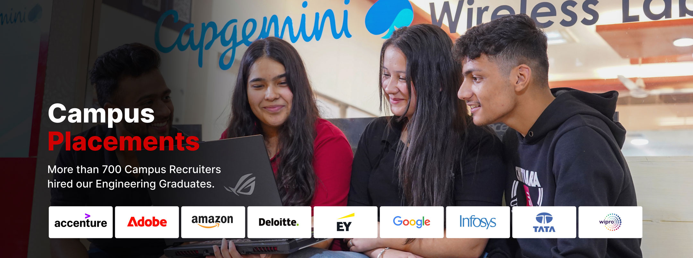

Future Ready Computer Science & Engineering Programs
We offer more than one path to your goal as our Computer Science & Engineering graduates are able to choose their specialisation after the end of 2nd Year once they have mastered the basic computing fundamentals.
Computer Science & Engineering Specialisations
Chitkara University’s Computer Science & Engineering program allows students to choose from a range of specialisations after mastering core computing principles. These specialised tracks enable students to focus on emerging technologies, equipping them for the demands of a dynamic industry.
Placement Highlights
Study with us, and we’ll equip you to become ‘The Chitkara Graduate’ – a globally ready professional with the knowledge, skills, and expertise that employers seek, prepared to lead, innovate, and thrive in dynamic, competitive environments.
Program Highlights
Study with us and we’ll equip you to become ‘The Chitkara Graduate’ – a world-ready professional, with the knowledge, attributes and expertise that employers look for.
Strong Industry Collaborations
Our state-of-the-art labs and facilities provide the perfect environment for hands-on learning and innovation, equipped with the latest technology and specialised tools across a range of engineering disciplines, from robotics to renewable energy. In collaboration with industry leaders, we’ve established Centres of Excellence that bridge the gap between academia and practice.

iOS Development Centre
The iOS Development Centre powered by Apple and Infosys at Chitkara University is a cutting-edge hub dedicated to nurturing the next generation of iOS developers. Equipped with state-of-the-art tools and resources, the Centre offers students a collaborative space to master iOS development, from app design to deployment. Through hands-on training, industry-led workshops, and real-world project opportunities, students gain invaluable skills that prepare them for careers in mobile app development. The Centre fosters creativity, innovation, and technical expertise, empowering students to create impactful iOS solutions.
Harness the Power of Liberal Arts
At our university, we believe that a strong foundation in liberal arts complements technical education, fostering well-rounded engineers. The integration of humanities, ethics, communication, and critical thinking into the engineering curriculum encourages students to view problems from diverse perspectives. This interdisciplinary approach nurtures creativity, improves problem-solving abilities, and enhances leadership skills. By blending technical expertise with liberal arts, we empower our graduates to think broadly, communicate effectively, and lead with empathy in a rapidly changing world.